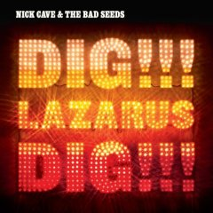

|
Ahem, I'm kind of embarassed to say, this is the first I've heard of Nick Cave. Of course I'd "heard" of him, but I'd never really gotten around to listening to his music. Despite the strongest of endorsements by Warner, I simply never had the reason to seek his music out. His new album - this song in particular - got significant airplay on The Current, and I found myself drawn to it. My impressions upon first hearing and seeing Cave are that he's some strange mix of Johnny Cash, Peter Murphy, and Neil Diamond (seriously - look at his picture). I can't claim to be fully smitten by the music, but this song and what I've heard from this album I've really liked. Plus - the seagulls are a great touch. |
 |